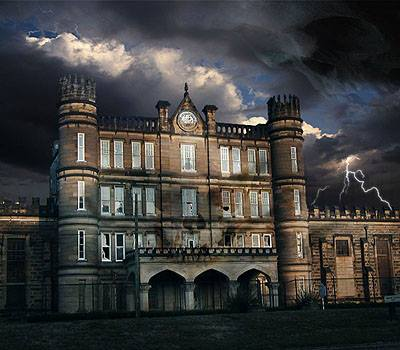
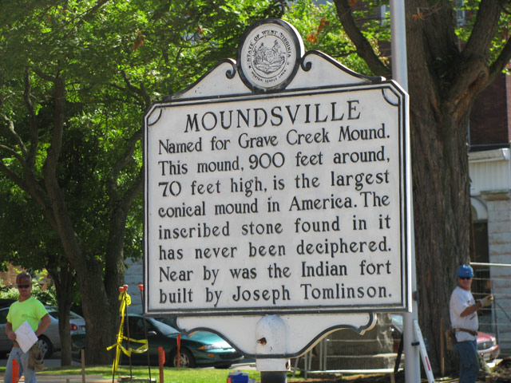

Are you brave enough to stay at the haunted West Virginia State Penitentiary? Take a tour with our ghost hunter tourguides or take the experience to a new level by staying the night if you dare!

The West Virginia State Penitentiary established in 1866 housed inmates until 1995. In total 93 men were executed for their crimes; 83 by hanging and 9 by electrocution. Wanna see the exact steps where the hanging of these men and the electrocution room occurred? Come visit TODAY to see for yourself!
Why Should You Come?
THE TERROR BEGINS! The West Virginia State Penitentiary that once inhibited inmates has been turned into a haunted museum for family and friends to visit. (It is recommended for children above the age of 13.) For the past 22 years, it has been scaring its visitors with amazing props, digital FX, great actors, extraordinary professional makeup, and tourguides who were once prison guards. With authentic letters, handmade prisoner weapons such a knives and shivs, and the prison cells will give you a truly shocking and breathtaking experience. You will feel the chilling presence of past prisoners as you pass through the halls of the penitentiary.
What Do We Offer?
Escape the Pen: The Execution
Rules: Escape rooms are a type of physical adventure game in which people are locked in a themed room with other participants. They have to use the different elements within the room to solve a series of puzzles, find clues, and escape the room within a set time limit. (60 minutes) Participants must be observant and use their critical/lateral thinking skills to escape the room.
The Governor of West Virginia has ordered a one hour stay of execution for an inmate at the West Virginia State Penitentiary. Inmate Lefty Lafferty was scheduled to be put to death today, but in a bizarre turn of events the Governor halted the electric chair execution due to new information that was received just hours ago. Details are not available, but a source close to the administration has said that a special investigative team is being dispatched to the Penitentiary. The Governor received an anonymous tip, rumored to have been sent via fax that listed details about the crime Lefty is being charged with; our source indicated that there are details included that no one could have known. After brief consideration the execution has been halted for one hour.
Tours
Daily Tours
Group Tours
Call now to book your bus tours, school groups or organizations! Tours are 90-minutes of history, education, fun, and interaction with your tour guide about cold, hard facts. For instance, some inmates spent 22 out of 24 hours in their cells. This is an experience like no other! After the 90-minute guided tour please take time to enjoy our museum. It houses a variety of contraband on display, a copy of the letter from Charles Manson requesting transfer to the former West Virginia Penitentiary, pictures of executed inmates, and last but definitely not least, "Old Sparky." They electric chair that was made by an inmate to execute inmates.
Day Tours
There will be a 90-minte guided Day Tour which will consist of an astonishing history, a touch of art, cold hard facts, and an insight into the justice system. You will walk through this gothic-style structure in amazement and wonder why you did not visit sooner! You will visit the recreation yards, both visitation rooms, the new cafeteria that resulted from the riot of 1986, and take a walk through our facilites cellblocks. "The Alamo", which once housed the most dangerous and violent inmates, and "New Wall", where you might just get locked up!!!
Overnight Investigations
Private Paranormal
Plan your own Private Paranormal Investigation beginning at 11:59pm! Inclue a maximum of 15 ghost hunters or come all by yourself, to seek out the spirits that live here. You will receive a 90-minute guided tour, then set loose to roam on your own. Make sure to bring flashlights, cameras, extra batteries, and any investigative equipment that you might need!! Snack, refreshments, and coolers are permitted. Reservations must be made online through email with a $200 refundable deposit.
Ghost Adventures
Want to see what it is REALLY like to spend the night in prison - but with no living residents... book your overnight with us for Ghost Adventures! Tour the facility with a guide for a 90-minute guided tour and then roam the halls on your own. See who can find "living" in the Sugar Shack or North Hall, look for patients in the Psych Ward, or try to sit in a cell - we dare you! Make sure to bring flashlights, cameras, extra batteries, and any investigative equipment that you might need!! Snack, refreshments, and coolers are permitted.
Daily Tours:
Tuesday through Sunday.
Hours may vary.
Closed Mondays and Holidays.

There are many other tourist sites to visit with the family while staying in Moundsville, West Virginia.
Site Seeing:
Archive of the Afterlife: The National Museum of the Paranormal
User "kilgorerena" says: Scary and fun! Make sure you take the last tour of the day. The guide is amazing and allows you to wander at will and even places that are dark and creepy! Knowledgable because he actually worked there when it was open and loves to tell you about the "gate." Want to know more? You will need to go yourself, we won't let that cat out of the bad LOL! Ask questions, be sure to check out the books for sale, we bought one and wished we purchased a couple more.
User "John P" says: AWESOME!!! We did the Dungeons of Horro one. It was SUPER fun! The actors were great, the animatronic things were super cool, the vibe was amazing, etc. We've been to a TON of these things and this was by far the best one we've been to and we will definitely be back again next year, but we will also be looking into the historical tours and ghost tours and everything too! The only negative thing I can say is they told us the tour would be 45 minutes, but it was twice that. Probably because my girlfriend and I kept trolling the actors which made it take too long, so for most people 45 minutes sounds about right!
User "brickie074" says: Amazing History Truly a hidden gem, and off the touristy path but worth the trip. Not a place for young children - should be at least 13. It is a massively huge place. Just to see all the fencing wire, cages, razor wire and the cells is an experience you will not soon forget. Seeing all the weapons - knives, shivs, etc, that the prisoners made is an eye opener. Do not pass up reading the letter from Charles Manson. Our tour guide was a former guard at the prison and she was very good, she answered all of questions etc, and had many interesting "tales" to share. This place is worth a side trip.
Panda Travel Agency
Contact us with any questions or concerns you may have! Also let us know how your experience was :